AR(N)AN / The Floating Urban Atlas
Stone, water, and the trail.
R0-A3 focuses on fractured cliffs, the waterfall and close-range vegetation. The existing island, sky, daylight, trails and gameplay are preserved.
Human visual review pending. Target ≥4/5, no category below 3/5. No human score is assigned. R0-B has not started.
Fourteen unretouched native browser screenshots, all 1280×720. Each pair matches camera position, orientation, FOV, aspect and player placement. Lighting, sky and cloud shaders are unchanged; cloud drift is not synchronized. Open either image at full size. Camera evidence.
01 / Full-island aerial
The upper footprint, elevations, trails, sky and lighting remain unchanged. Cliff fractures and selected formations add detail beneath the existing landscape.


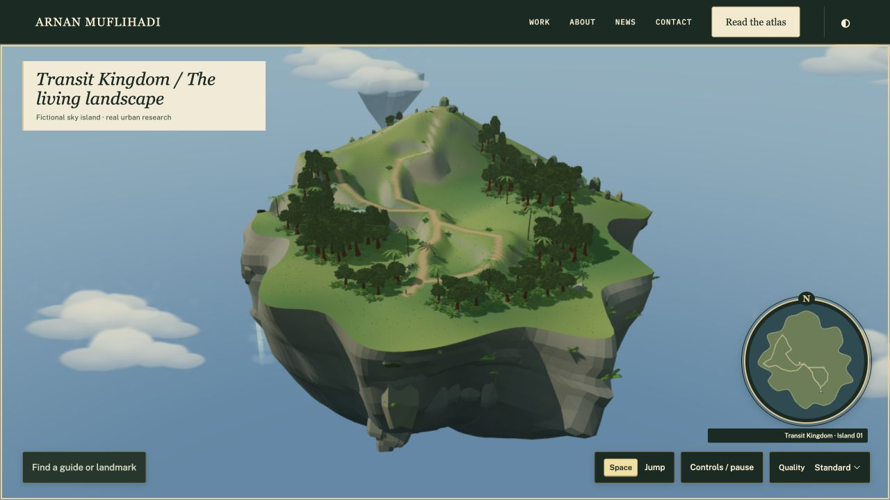
02 / Island side and underside
Offset fracture beds and embedded slab formations interrupt the broad surfaces. The waterfall now follows a curved outward arc and fades into localized mist.

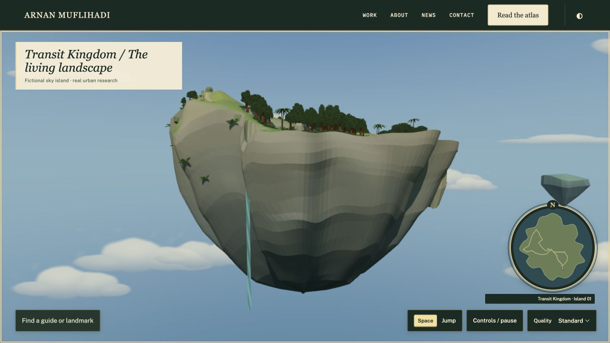

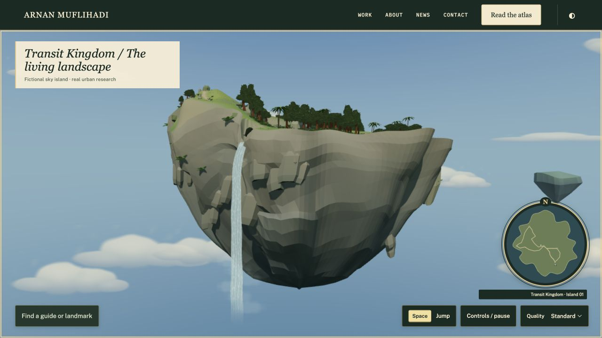
03 / Low-angle rock cliff
Real crevices, varied face orientations and embedded stone create shadow depth. Some quieter regions retain broad low-poly faces for review.

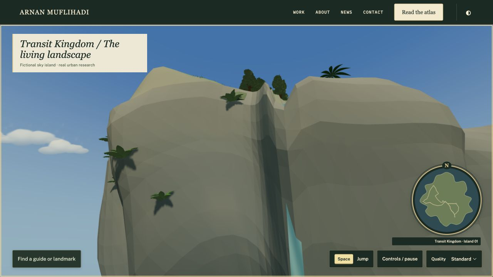

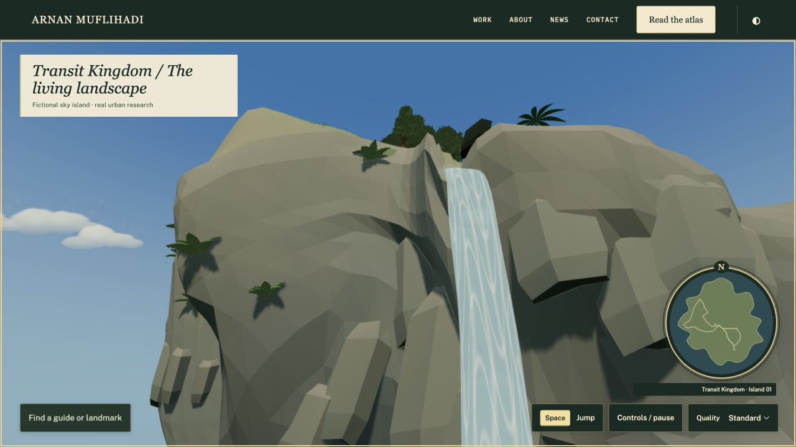
04 / Waterfall close-up
The old narrow plane becomes a closed curved volume with a 3.6 m spill edge. Flowing highlights, lip integration and lower breakup are visible at the same camera.

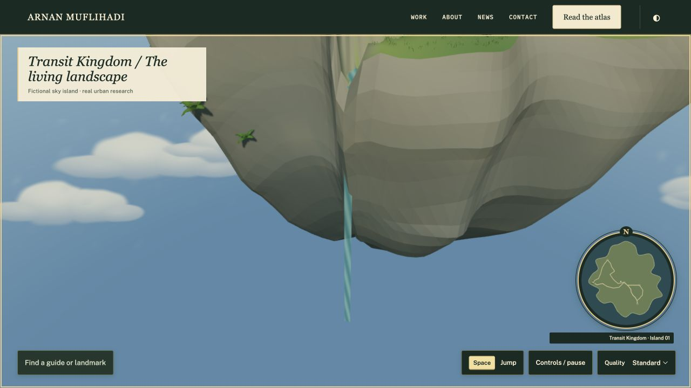

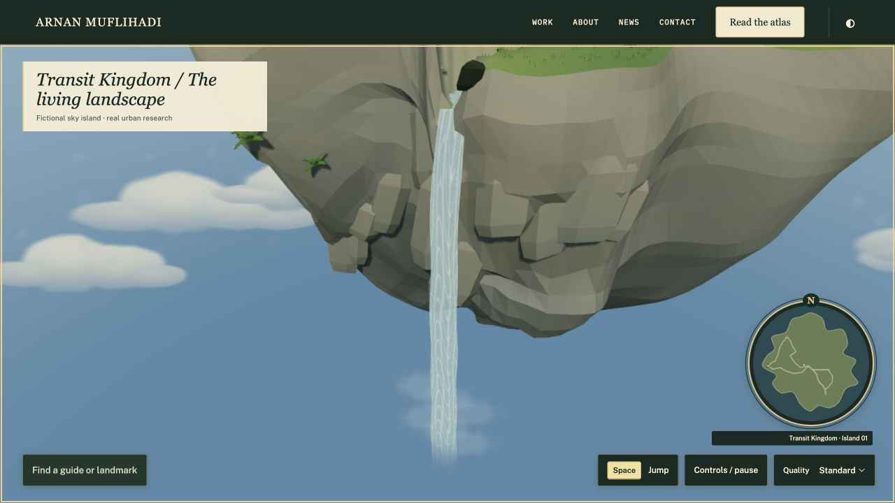
05 / Forest walking trail
Five cached tree growth forms replace the previous three. Selected broadleaf plants, ferns, small stones and flowering bracts enrich the preserved path margins.

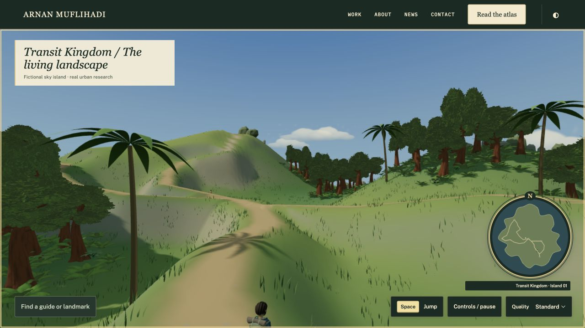

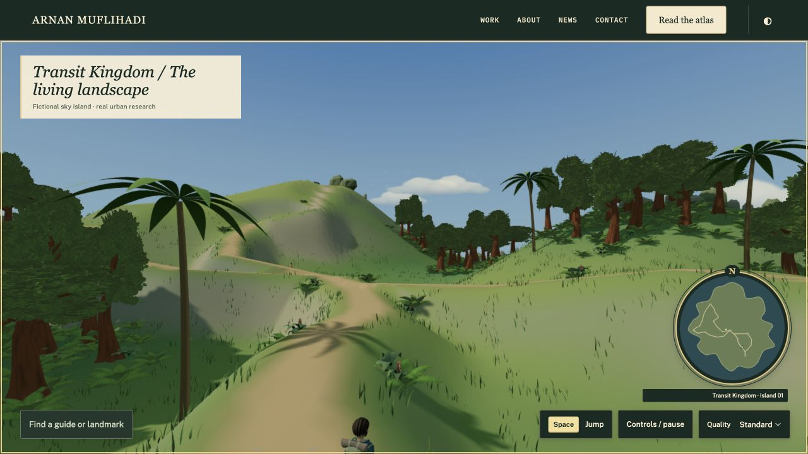
06 / Scenic overlook and stream
The existing channel is wider, with a spring pool, bank rocks and aerated spill edge. The natural overlook and trail connections remain unbuilt and unchanged.

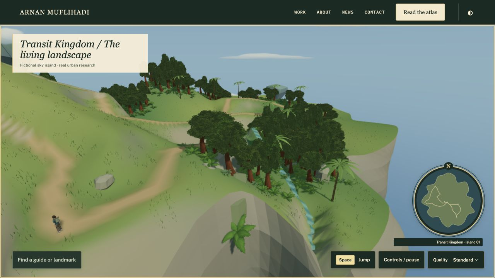

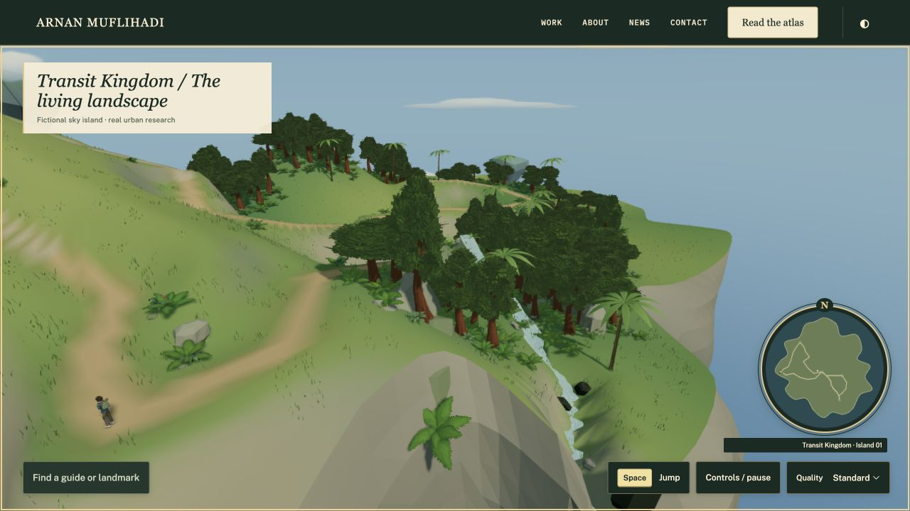
07 / Third-person gameplay
The existing explorer, camera and trail establish scale. Detail groups sit beside the walking corridor; movement and jump behavior remain intact.

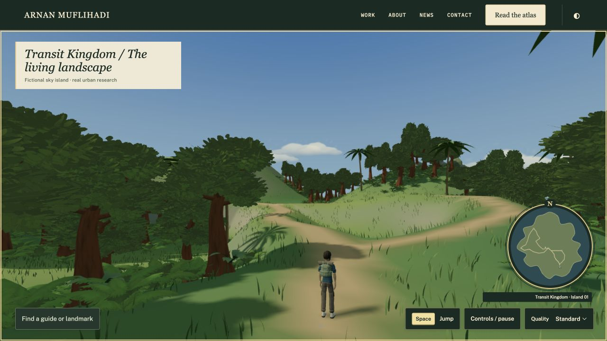

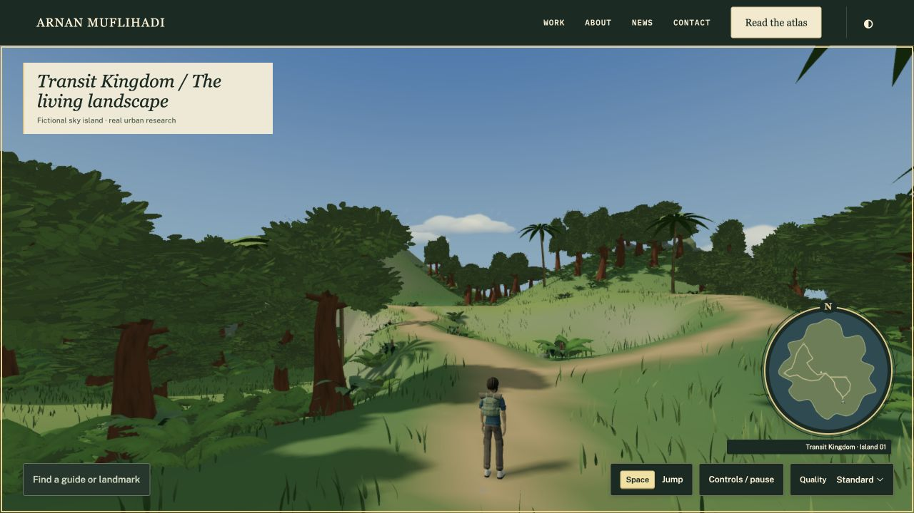
Checks and measured cost
81/81 tests pass. All previous 79 remain. Exact upper terrain, support, routes and reservations are verified. Native walking, running, jumping/landing, pause, reduced motion, Eco, editorial/adventure handoff and MBR were checked. The handoff preserves player position, one scene and one renderer. No console warnings/errors or missing environment textures were captured.
| Sample | Moving mean / p95 | FPS | Calls / triangles |
|---|---|---|---|
| R0-A2 Standard | 8.3342 / 9.20 ms | 119.99 | 86 / 1,229,590 |
| R0-A3 Standard | 8.3348 / 9.30 ms | 119.98 | 92 / 1,255,902 |
| R0-A3 Eco | 8.6123 / 9.10 ms | 116.11 | 87 / 1,204,926 |
Before/after Standard follows the same W 5 s / S 5 s protocol from arrival spawn. Eco is a separate walk and disables shadows; this run shows no FPS gain. These are local rAF measurements, not GPU times or a cross-device guarantee.
Potential environment geometry rises 1.07% to 1,335,218 triangles. The same five active GLBs total 3,859,228 bytes; all six previous inventory hashes and licenses are preserved. No external assets, reference code or dependencies were downloaded. The static audit still fails with the same 58 inherited findings, none added or resolved.
Test log · Before/after walking measurements · Eco sample · Gameplay and handoff · Actual loaded counts · Inventory and licenses · Research checks · Console · Audit comparison
Remaining visual review
Quieter cliff regions retain broad low-poly faces and visible bed transitions. The original foliage texture remains recognizable across growth forms. Water highlights are patterned, and mist cards can flatten at oblique angles. Please judge these in the matched views; no aesthetic score has been assigned.
Physical phones, GPU frame times and cold-network loading are untested. No architecture, additional playable island, flight, new NPC, monster, quest or shop is added.